Who lives in the soil?
Soil organisms range from a few micrometres to several centimetres. Biologists usually sort them by body size.
Microorganisms and microfauna
the smallest · under 0.1 mm
Bacteria, archaea, fungi and protists, together with microscopic animals such as nematodes and tardigrades.
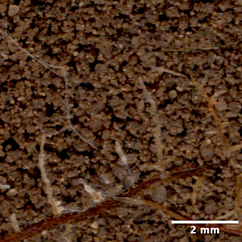
Mesofauna
intermediate size · about 0.1 to 2 mm
Springtails, mites, symphylans, diplurans and potworms.
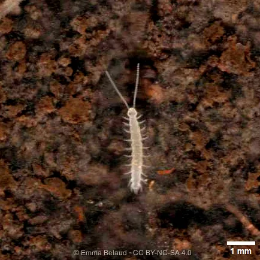
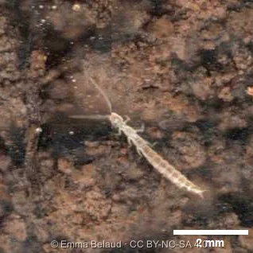
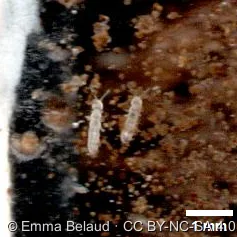
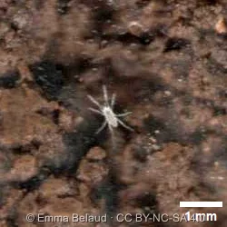
Macrofauna
the largest · over 2 mm
Earthworms, millipedes, woodlice, ants and spiders. Plant roots are not animals, but they also share this space and attract many of these organisms.
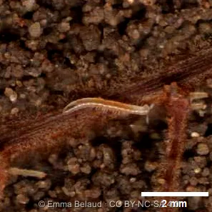
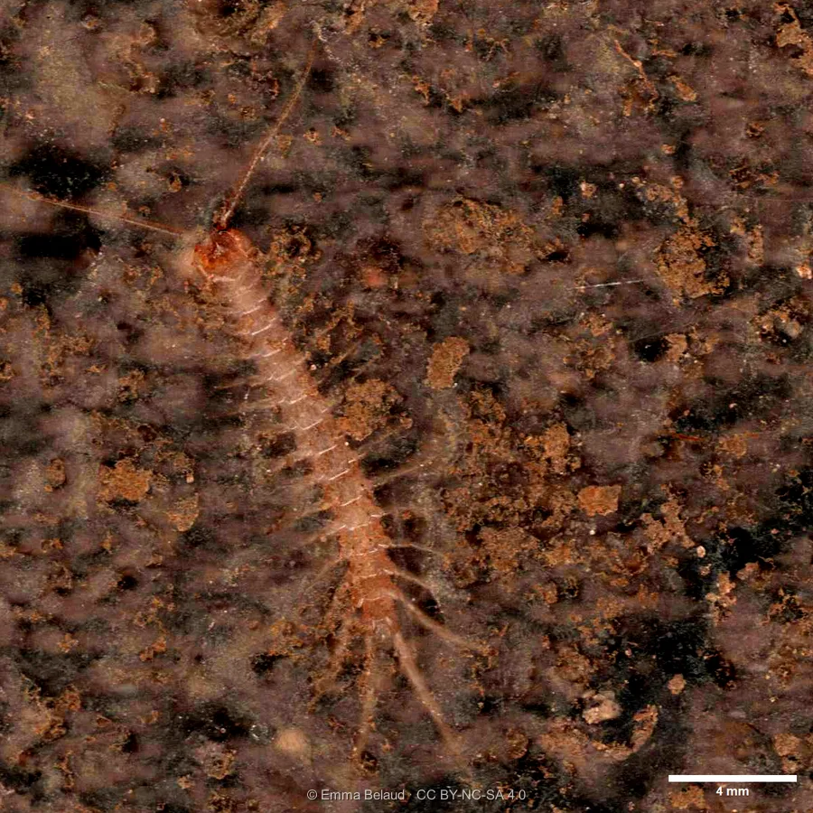
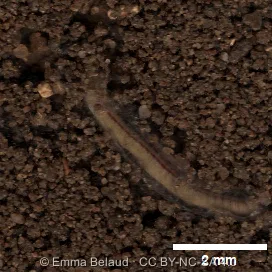
Photos © Emma Belaud · CC BY-NC-SA 4.0
What do they do down there?
Each soil organism plays one or several roles in the ecosystem, which we call its function. Grouping organisms by function gives three main functional groups: decomposers, predators and ecosystem engineers. The boundaries are blurry, because many species play several roles at once.
Decomposers
Decomposers feed on dead plants, dead animals and their droppings, and transform this organic matter step by step: they are the recyclers of the soil. Soil animals shred and mix the debris, and microorganisms then complete the job through mineralisation, which breaks matter down into simple molecules. These are the nutrients that plants can finally use to grow.
A leaf being broken down, seen through the scanner.
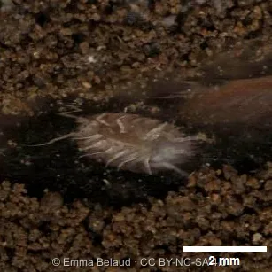
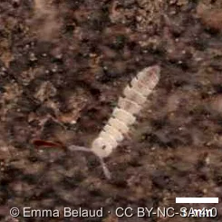
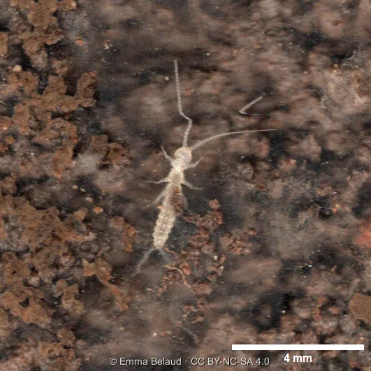
Photos © Emma Belaud · CC BY-NC-SA 4.0
Predators
Predators eat other living organisms, which makes them key players in biological regulation. By feeding on crop pests, they directly benefit agriculture and are called beneficial organisms. More broadly, by keeping prey populations in check, they can help many species live side by side (coexistence), which supports biodiversity. Not every member of these groups hunts, however: some mites, for example, feed on fungi or dead matter.
A geophilomorph centipede roaming around a root.
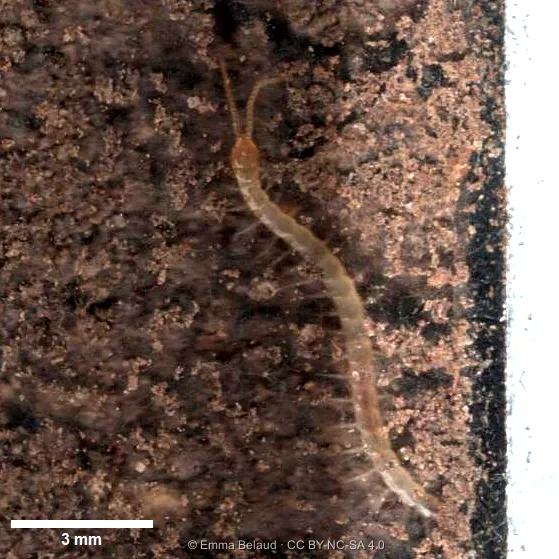
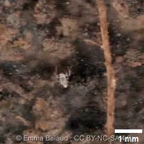
Photos © Emma Belaud · CC BY-NC-SA 4.0
Engineers
Ecosystem engineers shape the structure of the soil. As they move about in search of food or shelter, they dig and push material around, creating new spaces that change the habitat of all the other organisms. The animation shows ants starting to dig a network of tunnels. Earthworms and ants are the best-known engineers, but in reality every soil organism, even the smallest, contributes to mixing the soil and refining its structure.
A well-structured soil is made of mineral and organic particles assembled into aggregates of various sizes, with empty spaces in between (the porosity). These spaces let roots penetrate and let water and oxygen circulate.
Ants digging galleries.
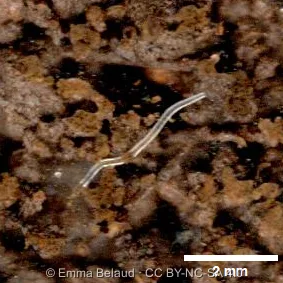
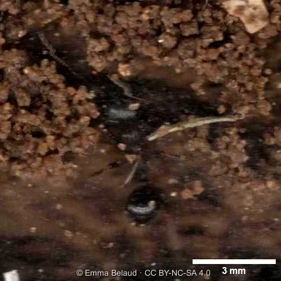
Photos © Emma Belaud · CC BY-NC-SA 4.0
Zoom on bioturbation
The physical rearrangement of soil by living organisms has a name: bioturbation. Earthworms are widely known for it. Their burrowing creates pores that let water and air circulate and roots penetrate, as the animation shows.
Bioturbation by an earthworm.
Fungi: underground highways
Fungi are found everywhere in the soil. They colonise it in search of food by growing a network of thread-like filaments called hyphae. This network works as an extensive transport system, carrying nutrients over long distances.
Fungal hyphae colonising the soil.
Fungi and roots: a deal that pays both ways
Some of these fungi form a partnership with plant roots, called mycorrhiza. It is a symbiosis, meaning both sides benefit: the plant gives the fungus carbon-rich compounds, and in return the fungus supplies the plant with nutrients and water, effectively extending its root system. Fungal hyphae can explore a volume of soil about 10 times larger than roots alone. As a result, mycorrhizal plants tend to grow better, cope better with harsh conditions and be better protected against external threats.
Ectomycorrhizae (ECM) on a root.
Ants and their aphid herds
Roots can also be attacked by soil animals. Root-feeding aphids, for example, use roots as their food source. They have developed a mutualistic relationship with ants: the ants protect the aphids from their many predators and, in return, feed on the sugary honeydew the aphids produce. When these populations become too dense, this partnership can threaten crops.
Ants tending aphids on a root.
When grazing helps roots grow
Root grazing by soil animals is not always bad news for crops. When herbivores halt the growth of the main root, the plant can respond by producing lateral roots. This increases the contact area between roots and soil, and therefore the plant’s ability to absorb nutrients. These finer, slower-growing roots are also the ones most readily colonised by mycorrhizal fungi, which brings us back to the partnership described above.
Mycorrhization of a fine, branched root.
How do we see all this?
Everything you have just seen comes from images of the soil taken in situ by flatbed scanners buried underground, which photograph the same patch of soil again and again over time. To find out how the system works, see Soil biodiversity imaging.